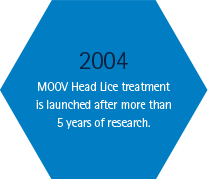
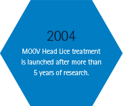

The dual burden of skin tears
A skin tear is a break in the skin caused by a minor trauma such as a bump or knock1
Skin tears are common in the elderly - skin typically becomes thinner and drier as we age2
Up to
40%+
prevalence rate in
aged care populations2
40%+
prevalence rate in
aged care populations2
1
The quality of life impact of skin tears
Skin tears in aged care residents can lead to:
Skin tears in aged care residents can lead to:
- Distress for patients and families2
- Ulcers3
- Prolonged hospital stays2
- Infection
2
The economic impact of skin tears
- Treatment can be lengthy, requiring daily wound dressing changes,
care and waste disposal4 - An Australian study analysing the costs of treating wounds estimated
the mean cost of treating a skin tear to be $488.954
Annual chronic wound care costs1
$2.85 billion
$2.85 billion
Direct costs to hospitals and aged care facilities in Australia (2010/11)
i
References:
- Wound Management Innovation Co-operative Research Centre. Accessed July 2017 from: www.woundcrc.com/major-challenge.html
- LeBlanc K, Baranoski S for the Skin Tear Consensus Panel. Skin tears: state of the science: consensus statements for the prevention, prediction, assessment, and treatment of skin tears. Adv Skin Wound Care 2011; 24(9): 2–15.
- Wound CRC delivers a 50% reduction in skin tears. Accessed July 2017 from: http://us6.campaign-archive2.com/?u=bcb25504cb5390d57b14f0ee0&id=16f88e701b&e=a22c1351a8
- Vu T, Harris A, Duncan G, Sussman G. Cost effectiveness of multidisciplinary wound care in nursing homes: a pseudo-randomized pragmatic cluster trial. Fam Pract 2007; 24: 372–379.